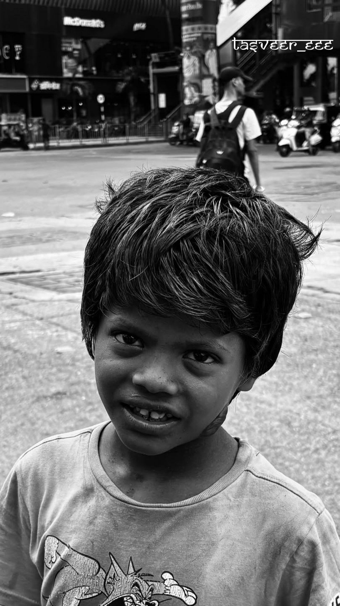
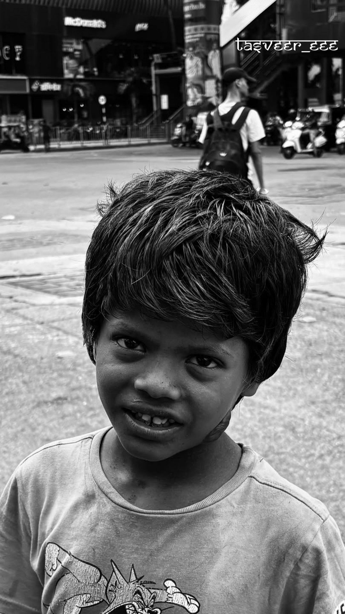

Hello, I'm Soham
A passionate photographer dedicated to capturing the beauty of fleeting moments and transforming them into timeless visual stories.
My Journey
Photography is more than just clicking a button; it's about freezing a moment that tells a story. My journey started with a simple point-and-shoot camera and an insatiable curiosity about the world around me.
What began as a hobby quickly evolved into a passionate pursuit of visual art. I found myself drawn to the interplay of light and shadow, the emotions captured in a single frame, and the stories that unfold through a series of images.
I specialize in landscape, portrait, and street photography, always looking for that perfect moment where everything aligns—the light, the subject, the emotion, and the story.
My Philosophy
I believe that great photography comes from a combination of technical skill, artistic vision, and emotional connection. Every photograph should evoke a feeling, tell a story, or capture a moment that might otherwise be lost to time.
Whether I'm photographing a bustling street scene, a serene landscape, or an intimate portrait, my goal is always the same: to create images that resonate with viewers and stand the test of time.
Specializations
Portrait Photography
Capturing the essence and personality of individuals through thoughtful composition and lighting.
Street Photography
Finding beauty in everyday moments and documenting the authentic life of urban environments.
Landscape Photography
Showcasing the majesty of nature through careful attention to light, composition, and timing.
Event Photography
Documenting special moments and celebrations with a photojournalistic approach.
My Gear
While I believe that the photographer is more important than the camera, I do rely on quality equipment to bring my vision to life. My toolkit includes professional-grade cameras, a variety of lenses for different situations, and essential accessories for both studio and outdoor shoots.
Let's Work Together
I'm always excited to collaborate on new projects and bring creative visions to life. Whether you're looking for portrait sessions, event coverage, or commercial photography, I'd love to hear from you.
Get In Touch 
